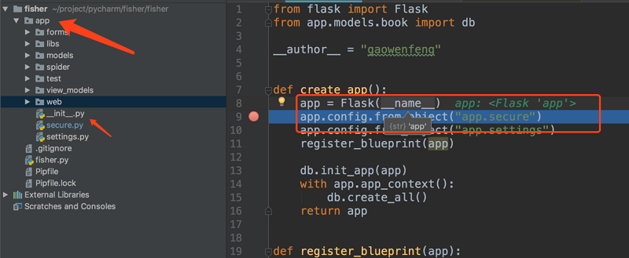
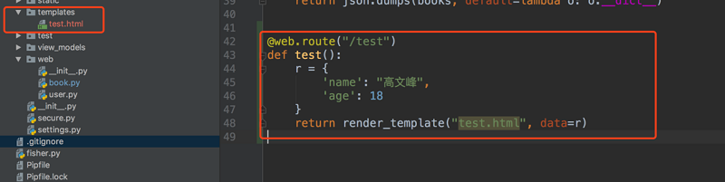
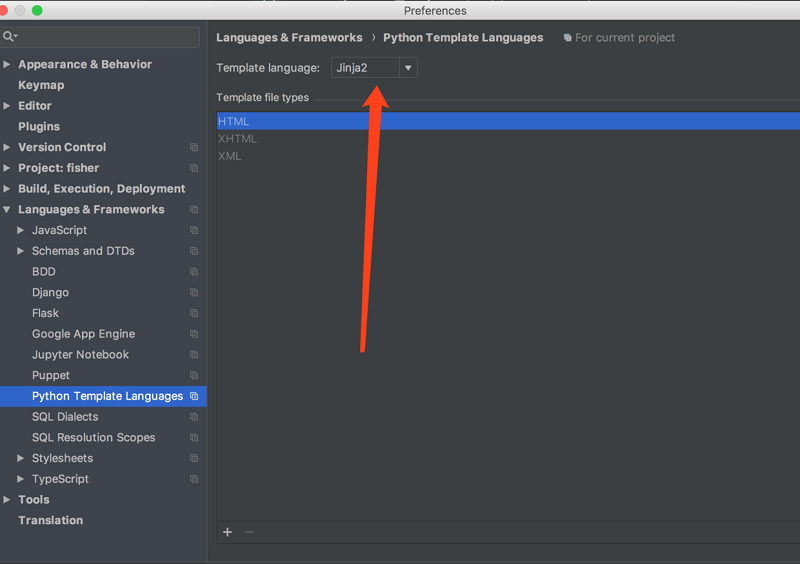
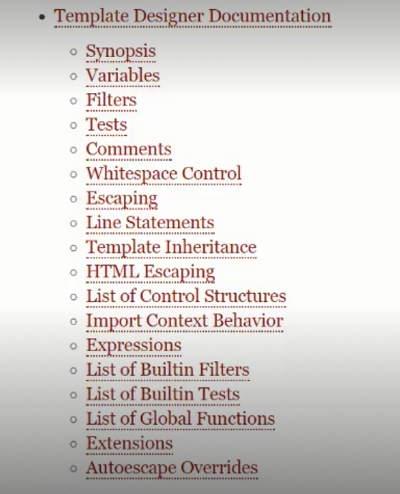

Flask 学习笔记|07 静态文件、模板、消息闪现与Jinja2
本章，我们将通过借助学习flask的模板来间接学习：列表推导式的应用、三元表达式的应用、@Property属性描述符、filter函数的应用、管道过滤器
7.1 静态文件访问原理
1.默认访问方法
Flask访问静态文件非常简单，只需要在项目根目录建立static文件夹。将静态资源文件放入static下即可。访问的时候访问http://ip:port/static/fileName即可。
需要注意的是，这里的根目录并不是项目的根目录fisher，而是app目录。这是因为，我们在实例化Flask核心对象的时候，传入了__name__参数，这个 __name__指向的就是当前文件所在目录。

2.修改默认存储路径
修改默认存储路径，只需要在实例化Flask核心对象的时候，传入static_folder这个关键字参数即可，但是这个时候，访问的路径应该变成http://ip:port/static_folder的最后一级/fileName，如果想自定义url访问路径，传入关键字参数static_url_path即可
app = Flask(__name__, static_folder="statics", static_url_path="/static")
3.核心原理
在Flask的app.py的Flask类的构造函数的地556行，是注册静态资源视图函数的源码，可以看到实际上就是通过我们之前所讲到的add_url_rule注册了一个视图函数。其中的访问url路径，就是获取了static_url_path
if self.has_static_folder:
assert bool(static_host) == host_matching, 'Invalid static_host/host_matching combination'
self.add_url_rule(
self.static_url_path + '/<path:filename>',
endpoint='static',
host=static_host,
view_func=self.send_static_file
)
下面是static_url_path的定义，可以看到他是调用了_get_static_url_path方法。
这个方法首先获取static_url_path关键字参数，如果有，则直接将其作为url访问路径，否则获取static_folder关键字参数，如果有，则取他的基本路径拼拼接上“/”作为url访问路径
def _get_static_url_path(self):
if self._static_url_path is not None:
return self._static_url_path
if self.static_folder is not None:
return '/' + os.path.basename(self.static_folder)
7.2 模板文件的位置与修改方案_x264
1. 默认位置
模板文件默认的位置是根目录（这里的根目录口径同上一节）下的templates，然后再下面建立html文件。
编写视图函数，返回值使用Flask的render_template方法，第一个参数传html页面名称，后面的参数可以穿要渲染的数据对key-value。key为这组数据名，value为数据对象

2.修改默认位置
如果要修改模板默认位置的话，可以在app或者蓝图实例化的时候，传入template_floder关键字参数
web = Blueprint('web', __name__, template_folder='')
app = Flask(__name__, template_folder='')
- 不建议将视图和静态资源建立在蓝图下面，因为他们可能属于多个蓝图。
7.3 Jinja2
1.jinja2模板渲染
读取字典和对象的两种方式
{# 注释 #}
{{ data.name}}
{{ data["age"] }}
条件控制语句
{# 条件可以使用python的逻辑语言 #}
{% if data.age < 18 or data.name == '高文峰' %}
aaa
{% elif data.age == 18 %}
bbb
{% else %}
ccc
{% endif %}
循环控制语句
{% for foo in [1,2,3] %}
{{ foo }}
{% endfor %}
{% for key,value in data.items() %}
{{ key }}
{{ value }}
{% endfor %}
2.使用模板继承
父文件使用block定义各个模块 layout.html
{% block head %}
<div>this is head</div>
{% endblock %}{% block father content %}
<div>this is content</div>
{% endblock %}
{% block foot %}
<div>this is foot</div>
{% endblock %}
子文件使用 extends 继承父模块，然后可以覆盖父模块的block，如果还需要继承父模块的元素，可以使用super()关键字
{% extends 'layout.html'%}{% block content %}
{{ super() }}
this is child content
{% endblock %}
2.设置jinja2语法高亮

3.官网ttp://jinja.pocoo.org/docs/2.10/
最重要的为以下几节 
7.4 过滤器与管道命令
代码1
{# 注意这里的data里是不存在school的值的 #}
{{ data.school | default("未名")}}
这段代码在浏览器中会显示“未名”。
代码2
{# 注意这里的data里是不存在school的值的 #}
{{ data.school==None | default("未名")}}
这段代码在浏览器中会显示False。
代码3
{# 注意这里的data里是不存在school的值的 #}
{{ data.school | default(data.class) | default("未名")}}
这段代码在浏览器中会显示”未名“。
- 管道命令“|”是首先计算“|”前面的表达式的值, 然后将结果传到“|”后面的表达式。
- default函数的作用是先判断前面传来的值存在不存在，如果存在直接返回，否则返回参数的值
- data.school 这个属性不存在，所以第一段代码会执行default函数，而data.school==None结果是False，这个结果存在，所以第二段代码直接返回False
- 第三段代码，首先计算data.school，传入下面的default，data.school不存在，所以返回data.class，data.class又回传入第三个default，data.class不存在，所以返回”未名“
代码4
{# data = {name:"mark",age:19} #}
{{ data | length() }}
这段代码返回2，因为length()函数，返回前面传入结果的长度
7.5 反向构建URL
如果需要在html中通过url访问其他的路径，有如下几种方法
法1：直接通过全路径访问
<link type="text/css" rel="stylesheet" href="http://ip:port/static/test.css">
这种方案最差，当上了生产环境，就需要修改ip和port，不现实
法2：通过相对路径
<link type="text/css" rel="stylesheet" href="/static/test.css">
这种方案的缺点在于，静态文件的url_path是可以修改的，当修改了静态文件位置的时候，还是需要全局修改。
法3：通过endpoint反向构建url
之前我们讲过url和视图函数的映射，是通过endpoint和map注册的。这里的endpoint就是用来我们反向构建url，通过endpoint找到对应的url。
关于endpoint的讲解，请看2.6
<link type="text/css" rel="stylesheet" href="{{ url_for('static',filename='test.css') }}">
7.6 消息闪现、SecretyKey与变量作用域
官方文档 http://docs.jinkan.org/docs/flask/patterns/flashing.html
Flask 提供了一个非常简单的方法来使用闪现系统向用户反馈信息。闪现系统使得在一个请求结束的时候记录一个信息，然后在且仅仅在下一个请求中访问这个数据。
1.在视图函数中配置闪现消息
flash("hello,wenfeng", category="success")
flash("hello,jiagndan", category="warning")
2.在html中使用闪现消息
{% set message = get_flashed_messages() %}
{{ message }}
使用set创建变量，这时的变量作用于在整个block
{% with message = get_flashed_messages() %}
{{ message }}
{% endwith %}
使用with关键字，可以随意控制作用域
7.7 页面结构解析
- 原文作者：Binean
- 原文链接：https://bzhou830.github.io/post/20160507flask07/
- 版权声明：本作品采用知识共享署名-非商业性使用-禁止演绎 4.0 国际许可协议进行许可，非商业转载请注明出处（作者，原文链接），商业转载请联系作者获得授权。